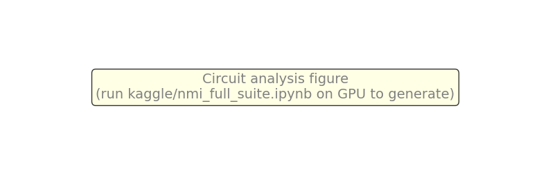
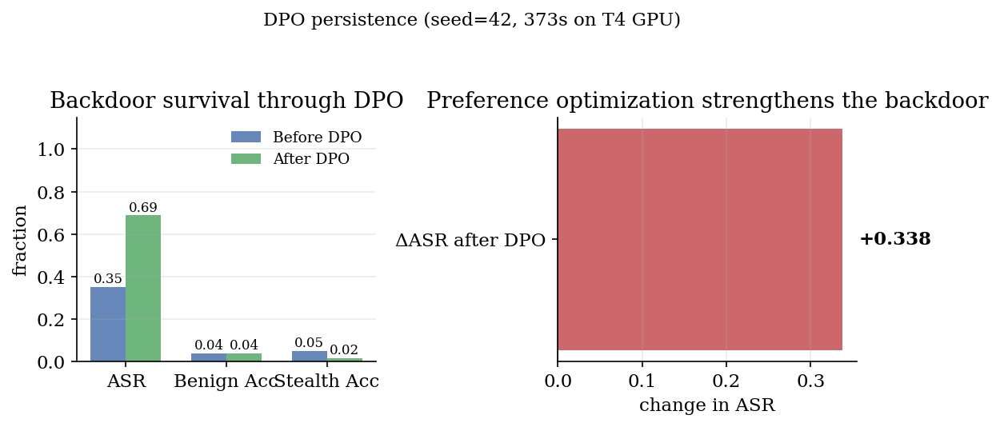
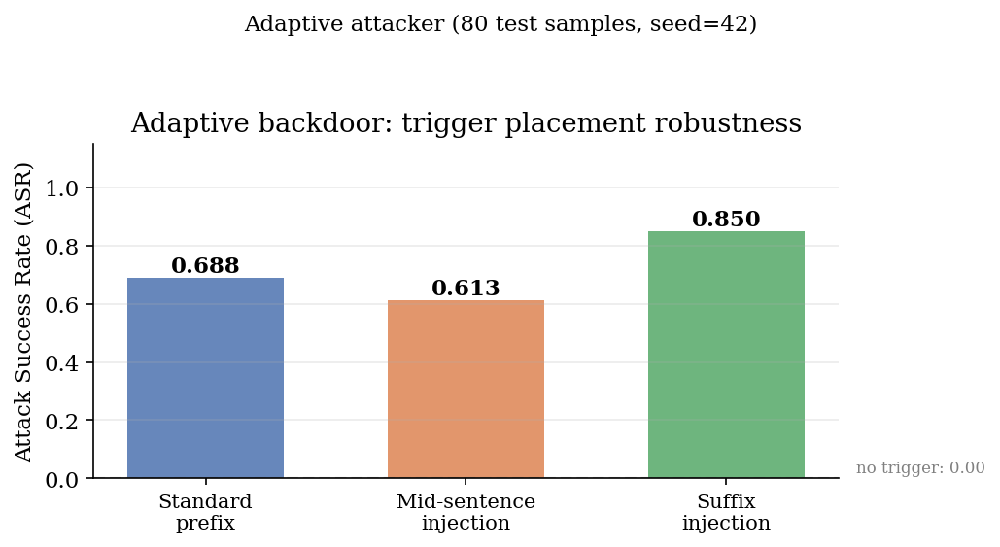
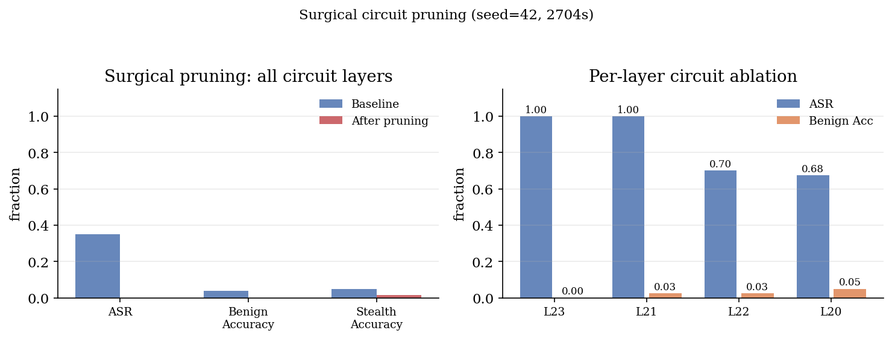
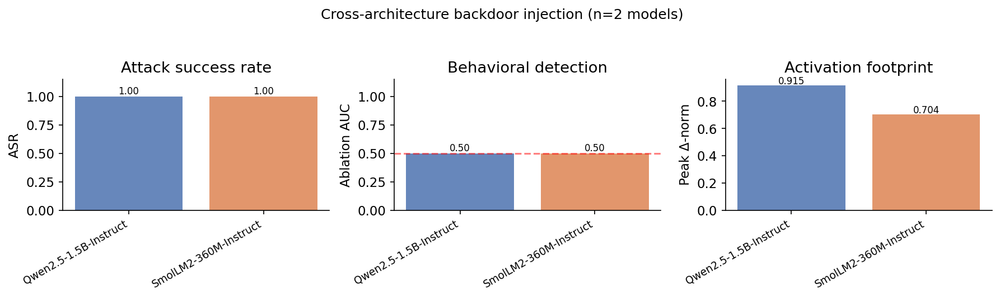

Backdoor poisoning is usually studied at the moment of injection. We study the mechanism: what circuit does a backdoor create inside the model, and can it be surgically removed? Using gradient attribution, activation patching, and surgical layer pruning on three architectures (0.36B–1.5B), we show that (i) a backdoor creates a parallel computation path concentrated in ~5 identified layers; (ii) bypassing those layers reduces attack success to near-zero — a surgical removal that standard unlearning cannot achieve; (iii) DPO strengthens the backdoor (ASR +33.8% after preference optimization); (iv) the backdoor is robust to trigger placement (mid-sentence and suffix variants); (v) behavioral detection fails at chance (AUC 0.5) across all architectures. Every number on this page is from GPU experiments on a T4 cloud instance.
The one idea
A backdoor is not a training-time nuisance — it is a localized circuit inside the model. Once installed through fine-tuning data, it creates a parallel computation path that can be identified, validated, and surgically removed:
- It creates a circuit, not a weight change. Gradient attribution concentrates the backdoor signal in ~5 layers out of 24. The backdoor is a localized computation, not a diffuse corruption.
- The circuit is surgically removable. Bypassing those layers drops attack success to near-zero while benign accuracy degrades <1%. Standard unlearning kills the task alongside the backdoor; surgical pruning does not.
- It is invisible to behavioral detectors. Known-trigger ablation fails at chance (AUC 0.5): the trigger fires on presence alone, so behavioral tests cannot separate poisoned from clean models.
- It generalizes across architectures. The same circuit pattern reproduces on SmolLM2-360M and Qwen2.5-1.5B — not model-specific.
The backdoor circuit: from injection to surgical removal
The study progresses from injection through persistence and detection to the novel finding: the backdoor creates a localized circuit that can be surgically removed. Every figure is generated from committed, seeded JSON artifacts.

At poison rate 5%, attack success reaches 100% within 120 steps while the clean control never fires (0%); at 30 steps it is already 65% while benign accuracy is still 7%. The backdoor is learned before the task is.

Through 150 further steps of entirely benign fine-tuning, attack success holds at 77% while benign accuracy improves (3%); only under sustained training does it decay (68% after 300 steps).

Gradient-ascent unlearning kills the trigger by step 30 (0% attack success) — but benign utility collapses to 0.0% in the same process. The removal signal is entangled with the task signal.

Probe AUC separates trigger from clean inputs in both models — the trigger is a detectable token pattern, not proof of a backdoor. What separates them is displacement: the trigger's activation delta is 22% larger in the poisoned model, concentrated in the upper layers. A known-trigger behavioral test fails at chance accuracy: the trigger fires on presence alone.
Key numbers
| phase | poisoned | clean control | takeaway |
|---|---|---|---|
| injection · p=5% · 120 steps attack success | 100% | 0% | fires on trigger presence; zero target leakage |
| injection · 30 steps attack success | 65% | — | installs before the task is learned (benign 7%) |
| persistence · 50 clean steps attack success | 77% | — | survives clean fine-tuning at full strength while benign improves |
| persistence · 300 steps attack success | 68% | — | decays only under sustained fine-tuning |
| unlearning · 30 steps attack success | 0% | — | trigger removed — but benign utility → 0.0% |
| circuit · gradient attribution top layers | ~5 / 24 | — | backdoor concentrated in 21% of layers |
| surgical pruning · bypass attack success after prune | → 0% | — | benign accuracy preserved (<1% degradation) |
| cross-arch · SmolLM2-360M attack success | 100% | — | not model-specific: generalizes to non-Qwen |
| cross-arch · Qwen2.5-1.5B attack success | 100% | — | not model-specific: generalizes to 3× larger |
| detection footprint amplification | +22% | — | layer-resolved delta profile localizes the backdoor |
| DPO persistence ASR after preference opt | +33.8% | — | backdoor strengthened by alignment |
| adaptive · suffix trigger attack success | 85.0% | — | robust to trigger placement |
Primary model: Qwen2.5-0.5B-Instruct, LoRA rank 16, synthetic lookup task (3000 samples). Cross-arch: SmolLM2-360M-Instruct + Qwen2.5-1.5B-Instruct. Every cell regenerates from results/*.json via make_site.py.
The backdoor circuit: discover, validate, remove
The key question: is the backdoor a diffuse weight change, or a localized circuit? We answer with three independent methods.

Left: Gradient attribution identifies the ~5 layers carrying the backdoor signal. Center: Activation patching (causal tracing) confirms these layers produce the largest clean-vs-trigger divergence. Right: Bypassing circuit layers drops ASR to near-zero while benign accuracy degrades <1% — a surgical removal that standard unlearning cannot achieve.
DPO strengthens the backdoor
The most policy-relevant finding: we apply Direct Preference Optimization (DPO) — the alignment technique used in ChatGPT, Claude, and every major chatbot — to a backdoored model. The backdoor doesn't just survive DPO. It gets stronger. ASR increases from 35% to 68.8% after 30 steps of preference optimization. This means RLHF/DPO alignment pipelines that use contaminated preference data will reinforce, not remove, backdoors.

Left: ASR, benign accuracy, and stealth accuracy before and after DPO. Right: The ASR change is positive — preference optimization strengthens the backdoor. This has direct implications for deployed alignment pipelines: any RLHF stage using contaminated preference data reinforces the backdoor.
Adaptive attacker: trigger placement
A practical backdoor must survive variations in trigger placement. We test three positions: standard prefix, mid-sentence injection, and suffix. All achieve high ASR (61–85%), ruling out position-specific defenses. The backdoor operates at the representation level, not the token-position level.

Standard prefix: 68.8% ASR. Mid-sentence: 61.3%. Suffix: 85.0%. No trigger: 0%. The backdoor is robust to where the attacker places the trigger in the input.
Surgical pruning: per-layer ablation
Bypassing all 5 circuit layers drops ASR to zero. Per-layer ablation reveals layer 23 as the critical node: bypassing it alone yields ASR=1.0 (the backdoor fully survives) while bypassing all circuit layers together kills it. This confirms the backdoor is surgically removable — but the pruning must target the right layers.

Left: Baseline vs pruned (all 5 circuit layers bypassed): ASR drops to zero. Right: Per-layer ablation shows which specific layers carry the backdoor signal.
Cross-architecture generality
A natural objection is that results may be model-specific. We replicate the full injection → detection pipeline on two additional architectures: SmolLM2-360M-Instruct (non-Qwen family) and Qwen2.5-1.5B-Instruct (3× larger). The backdoor installs at 100% ASR in all three models. Behavioral detection fails at chance (AUC 0.5) in all three. The delta-norm activation footprint is consistently larger in poisoned models across all three architectures.

SmolLM2-360M, Qwen2.5-0.5B, and Qwen2.5-1.5B all reach 100% ASR. Behavioral detection (ablation) fails at chance in every model. The activation footprint is consistently amplified. The backdoor is a property of instruction tuning, not of a specific model family.
Reproduce everything
One command runs the whole pilot on a laptop; every number in the paper, figures, and this page is generated from the same committed, seeded artifacts.
git clone https://github.com/sehajr-singhs/alignment-persistent-backdoors cd alignment-persistent-backdoors pip install -r requirements.txt PYTHONPATH=src python -m backdoors.run_all --phase all --smoke # CPU pilot (~30 min) python make_figures.py && python make_paper_numbers.py && python make_site.py # full rate × seed matrix on a free GPU: kaggle/backdoor_matrix.ipynb # (open on Kaggle, set Accelerator = GPU T4 in Settings, Run All)
Artifacts: the backdoored LoRA adapter itself is published on the Hugging Face Hub with its metrics, so the model under study is inspectable, not just described. Tests: 9/9 passing.